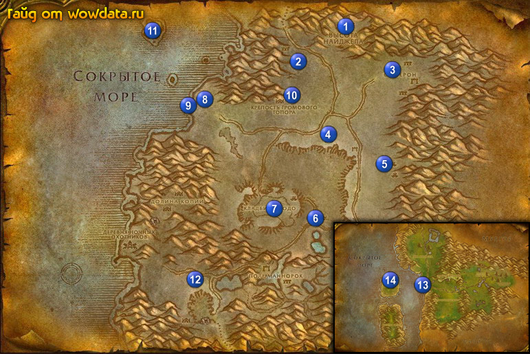

1) Сделайте Высоту Найджела 1 (66, 8) вашим домом, откройте пункт полета и летите в Когтистые горы, где закончите <Возвращение Обугленной долины>, игнорируйте следующую часть.
2) По руне вернитесь в Пустоши.
3) Южнее гостиницы закончите <Дела Поисковой корпорации в Пустошах>, начните <Реактивы для Поисковой корпорации> и <Пожитки Карнитола>.
4) У 2 нпс в центре начните <Награда за кентавров> 1 (67, 11).
5) Пройдите еще немного на юг и начните <Расследование Валарриэля>.
6) Бегите на запад 2 (56, 17). у разгромленных повозок откройте ящик и закончите <Расследование Валарриэля>, начните <Расследование Валарриэля>.
7) Бегите на восток и бейте демонов 3 (75, 20) для <Реактивы для Поисковой корпорации>.
8) Бегите обратно в город, закончите <Расследование Валарриэля> и начните <Расследование Валарриэля>.
9) Пройдите немного наверх и закончите <Реактивы для Поисковой корпорации>, начните <Реактивы для Поисковой корпорации>.
10) Теперь начинайте собирать яды из всех скорпионов для <Реактивы для Поисковой корпорации>, так как у них маленький дроп, то делайте это одновременно со следующими квестами, бегите начните <Собиратель костей> 4 (62, 38). Для этого квеста тоже собирайте кости при первом удобном случае, но пока не останавливайтесь на этом квесте.
11) Идите на восток пока не придете в Деревню клана Колкар 5 (72, 45). Бейте кентавров для <Награда за кентавров>. Если вы не станете 34 лвл когда закончите то пинайте кентавров дальше.
12) Идите вниз и начните <Отлов кодо> 6 (60, 61), это уникальный квест где нужно приручать Кодо на кладбище, нужно приручить и привести гоблину 5 штук. (прочитайте пункт ниже). И еще, когда приводите кодо. с ним надо поговорить, чтобы он засчитался.
13) Если вы увидите пак Старый кодо, то убейте 3 из них для квеста <Реактивы для Поисковой корпорации>, если вы не сможете найти их на кладбище кодо. (прочитайте пункт ниже).
14) На кладбище кодо 7 (51, 58) делайте <Собиратель костей>, будьте осторожны иногда появляются призраки кодо.
15) Когда приведете 5 кодо для <Отлов кодо>, закончите квест 6 (60, 61). Если вы еще не собрали яд со скорпионов то идите на северо-запад от кладбища и бейте их.
16) Начните <Скипетр Света> 8 (39, 27) около башни.
17) Идите на пляж 9 (36, 30) и закончите <Пожитки Карнитола> (сундучок такой у разбитой лодки) и начните <Пожитки Карнитола>, затем начните <Сокровища Ракмора>, открыв книгу Записи Ракмора которая лежит тут же на бочке.
18) Бейте Краб с мертвой хваткой и Жестколапый клешневик(креветки) в воде ради [серебряного ключа] для <Сокровища Ракмора> и наг севернее отсюда ради [золотого ключа].
19) Бегите наверх в Крепость Громового Топора 10 (56, 29), в центре главного здания закончите <Расследование Валарриэля> и начните <Поиски Тираниса> 10 (54, 26).
20) Выйдите наружу и бегите направо, убейте Ясновидец клана Пылающего Клинка на верху башни для <Скипетр Света>.
21) Пройдите в западное здание 10 (53, 29) и убейте Тиранис Малем для <Поиски Тираниса>, затем закончите квест внутри главного здания. Зачистите сразу главное здание от мобов, потому что следующий квест – эскорт.
22) Начните эскорт-квест <Возвращение к Валарриэлю>.
23) Идите закончите <Собиратель костей> (62, 38).
24) Бегите обратно к морю 8 (39, 28) закончите <Скипетр Света> у башни и начните <Книга Древних>.
25) Плывите на северо-запад, по карте на Остров Раназьяр и откройте там сундук 11 (30, 9) для <Сокровища Ракмора>. Он хитро замаскирован у фундамента под 2 деревьями.
26) Теперь делайте тут же <Книга Древних>, для этого найдите статую 11 (28, 7), почистите территорию вокруг от нага, затем используйте статую, чем вы призовете стража (28 лвл), убейте его и в трупе возьмите книгу.
27) Плывите обратно 8 (38, 27) и закончите <Книга Древних>.
28) По руне вернитесь в город .
29) Южнее гостиницы закончите <Реактивы для Поисковой корпорации>, игнорируйте третью часть этой цепи, тут же закончите <Пожитки Карнитола>, игнорируйте следующую часть квеста.
30) Пройдите еще южнее и закончите <Награда за кентавров>.
31) И наконец закончите <Возвращение к Валарриэлю>.
32) Если вы не стали 35 лвл то можете пойти бить кентавров 12 (37, 80).
33) Идите на юг в локацию Фералас чтобы открыть там пункт полета, это также сэкономит уйму времени в дальнейшем.
34) В Фераласе сядьте на корабль 13 (43, 42) и плывите в Крепость оперенной Луны где и откройте 14 пункт полета. Теперь летите в Кабестан.
35) Закончите <Гоблинская поддержка> и начните <Гоблинская поддержка>.
36) Затем в доках закончите <Управляющий пристанью Головокружилкинc> и начните <Детали для Крейвела>.
37) Сядьте на корабль в Пиратскую бухту.